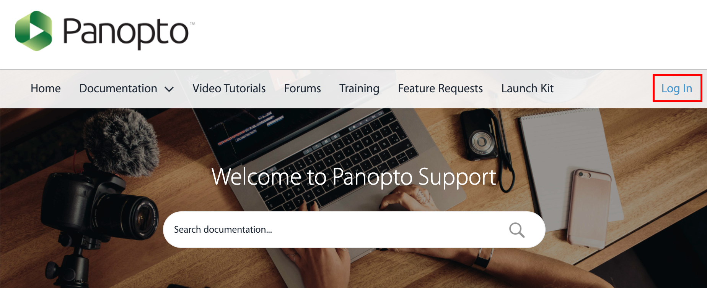
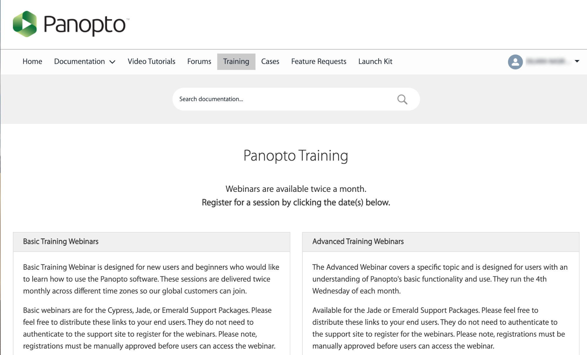
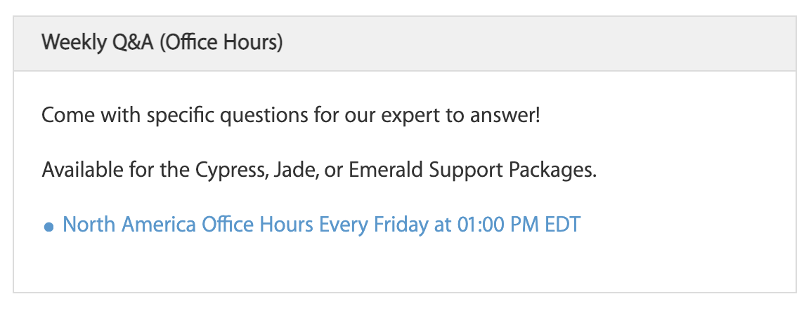

Panopto Support by Panopto Team
Tutorials and Guides
For general Panopto documentation, please refer to support.panopto.com. We have a Panopto Enterprise license.
Panopto Webinars
In order to access additional support materials (such as webinars and office hours), please create a support profile.
Webinars organized by Panopto support team are available twice a month. Register for a session here.
Panopto Office Hours
In addition, office hours with Panopto support team are available 10-11am PST every Friday here.
